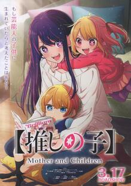

Elements
Text
This is bold and this is strong. This is italic and this is emphasized.
This is superscript text and this is subscript text.
This is underlined and this is code: for (;;) { ... }. Finally, this is a link.
Ini website shiro-nimeid yang sudah di remake dari website By Anime Streaming, Penggunaan progam HTML, JS, PHP, CSS.
Heading Level 2
Heading Level 3
Heading Level 4
Light Novel
Date A Live adalah sebuah seri novel ringan Jepang yang ditulis oleh Kōshi Tachibana dan diilustrasikan oleh Tsunako. Sebuah adaptasi anime yang diproduksi oleh AIC Plus+ ditayangkan di saluran AT-X sejak bulan April hingga Juni 2013. Setiap episode ditayangkan dengan kualitas rendah di Niconico seminggu sebelum mulai disiarkan di TV. Seri ini melanjutkan penayangannya dengan musim kedua bertajuk Date A Live II dari bulan April hingga Juni 2014, yang diproduksi oleh Production IMS. Sebuah adaptasi film ditayangkan pada tanggal 22 Agustus 2015.[4] Musim ketiga yang diproduksi oleh J.C.Staff ditayangkan sejak bulan Januari hingga Maret 2019. Adaptasi anime untuk novel spin-off berjudul Date A Live Fragment: Date A Bullet telah diumumkan. Saat ini Date A Live mendapatkan 3 adaptasi anime mulai dari Date A Live, Date A Live II, Date A Live III, dan Date A Live IV yang akan di rilis pada April 2022. Sepanjang penayangan Date A Live selalu masuk ke dalam jajaran anime ecchi terbaik.
Perfomance
i = 0;
while (!deck.isInOrder()) {
print 'Iteration ' + i;
deck.shuffle();
i++;
}
print 'It took ' + i + ' iterations to sort the deck web shiro.';Lists
New Anime
- Date A live IV.
- Chainsaw Man.
- Bocchi The Rock.
lternative
- Anime Name.
- Anime Name.
- Anime Name.
Actions
Light Novel
Oshi no ko 【推しの子】 Anak kesayangan/Anak bintang), yang diterbitkan di Indonesia dengan judul【Oshi No Ko】: Anak Idola adalah seri manga Jepang yang ditulis oleh Aka Akasaka dan diilustrasikan oleh Mengo Yokoyari. Manga ini mulai dimuat dalam majalah Weekly Young Jump terbitan Shueisha sejak April 2020, dengan bab-babnya dikumpulkan dalam sepuluh volume tankōbon pada Januari 2023. Manga ini menceritakan tentang seorang dokter spesialis kandungan bernama Goro Amemiya yang merawat seorang pasien yang juga merupakan idol oshi-nya, Ai Hoshino, yang tengah hamil di luar nikah. Ketika hari dimana Ai akan melahirkan, Goro diserang dan dibunuh oleh sosok misterius. Setelah kematiannya, Goro bereinkarnasi menjadi Aquamarine Hoshino, salah satu dari bayi kembar yang dilahirkan Ai. Manga ini diterbitkan dalam bahasa Inggris melalui platform Manga Plus. Manga ini juga telah dilisensi dan diterbitkan oleh penerbit Yen Press pada Januari 2023. Manga ini juga telah diterbitkan di Indonesia oleh penerbit m&c! dI bawah label imprint Akasha.Adaptasi anime seri ini yang diproduksi oleh studio Doga Kobo telah tayang perdana pada 12 April 2023. Anime ini juga tersedia untuk penstriman di Viu di wilayah tertentu.
Table
Default
| Name | Description | Bookmark |
|---|---|---|
| Item One | komik. | 29.99 |
| Item Two | manga. | 19.99 |
| Item Three | manhwa. | 29.99 |
| Item Four | manhuwa. | 19.99 |
| Item Five | doujin. | 29.99 |
| 100.00 | ||
Alternate
| Name | Description | Bookmark |
|---|---|---|
| Item One | komik. | 29.99 |
| Item Two | manga. | 19.99 |
| Item Three | manhwa. | 29.99 |
| Item Four | manhuwa. | 19.99 |
| Item Five | doujin. | 29.99 |
| 100.00 | ||
Oshi no ko
Manga ini menceritakan tentang seorang dokter spesialis kandungan bernama Goro Amemiya yang merawat seorang pasien yang juga merupakan idol oshi-nya, Ai Hoshino, yang tengah hamil di luar nikah. Ketika hari dimana Ai akan melahirkan, Goro diserang dan dibunuh oleh sosok misterius. Setelah kematiannya, Goro bereinkarnasi menjadi Aquamarine Hoshino, salah satu dari bayi kembar yang dilahirkan Ai. Berkisah tentang seorang dokter spesialis kandungan bernama Goro Amemiya yang merawat seorang pasien yang tengah hamil bernama Ai Hoshino, seorang idol terkenal yang sekaligus adalah oshi-nya Goro. Ai yang merupakan seorang idol tidak ingin seluruh fansnya tau bahwa dia tengah mengandung, sehingga dirawat di rumah sakit pelosok tempat Goro bekerja.
Komik Yumemiru Danshi wa Genjitsushugisha
Yumemiru Danshi wa Genjitsushugisha) adalah serial novel ringan Jepang yang ditulis oleh Okemaru dan diilustrasikan oleh Saba Mizore. Ini awalnya diserialisasi sebagai novel web di situs web penerbitan novel buatan pengguna Shōsetsuka ni Narō pada Desember 2018. Ia kemudian diakuisisi oleh Hobby Jepang, yang mulai menerbitkannya sebagai novel ringan pada Juni 2020 di bawah jejak novel ringan HJ Bunko mereka. Adaptasi manga yang diilustrasikan oleh Popuri Yoshikita memulai serialisasi di situs web Shōnen Ace Plus milik Kadokawa Shoten pada Maret 2021. Adaptasi serial televisi anime yang diproduksi oleh Studio Gokumi dan AXsiZ ditayangkan perdana pada Juli 2023.